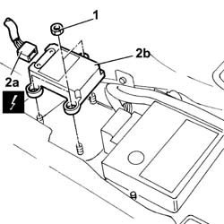

3350E30 General acceleration and slewing SENSOR
- Path
- Procedures > 33 BRAKES > 3350 TRACTION CONTROL > 3350E VEHICLE DIRECTION CONTROL SYSTEM V.D.C. > 3350E30 General acceleration and slewing SENSOR
- Kind
- repair procedure (removal / refitting; the operation number is the code)
- Applies to
- all engines; all production periods
- Interactive page
- https://sloeber94.github.io/elrnDB-lThss/en/#/156716
Applies to: all engines; all production periods
 Removing
Removing
 Refitting
Refitting- Disconnect the negative battery terminal.
See in Op. 5040D19 CONTROL UNIT with CONTROL PANEL for rear air conditioning - R.R.
See in Op. 7040L70 Tunnel cover REAR COVER - R.R.
See in Op. 5010C32 Air VENT in tunnel cover for rear seats
See in Op. 7040A65 passenger compartment box lock , one , r r
See in Op. 7045A10 FRONT SEAT (one) left or right - R.R.
See in Op. 7040L37 GEAR LEVER SURROUNDING TRIM - R.R.
See in Op. 7040L20 TUNNEL COVER - R.R.
1. Undo the fixing nuts.
2. Disconnect the electrical connector (2a) and remove the general acceleration and slewing sensor (2b).

Applies to: all engines; all production periods
Refitting
Removing- Connect the electrical connector and position the general acceleration and slewing sensor.
- Tighten the fixing nuts.
See in Op. 7040L20 TUNNEL COVER - R.R.
See in Op. 7040L37 GEAR LEVER SURROUNDING TRIM - R.R.
See in Op. 7045A10 FRONT SEAT (one) left or right - R.R.
See in Op. 7040A65 passenger compartment box lock , one , r r
See in Op. 5010C32 Air VENT in tunnel cover for rear seats
See in Op. 7040L70 Tunnel cover REAR COVER - R.R.
See in Op. 5040D19 CONTROL UNIT with CONTROL PANEL for rear air conditioning - R.R.
- Connect the negative battery terminal.
Topics linked from this page (7)
- 5010C32 Air VENT in tunnel cover for rear seats
- 5040D19 CONTROL UNIT with CONTROL PANEL for rear air conditioning - R.R.
- 7040A65 passenger compartment box lock , one , r r
- 7040L20 TUNNEL COVER - R.R.
- 7040L37 GEAR LEVER SURROUNDING TRIM - R.R.
- 7040L70 Tunnel cover REAR COVER - R.R.
- 7045A10 FRONT SEAT (one) left or right - R.R.